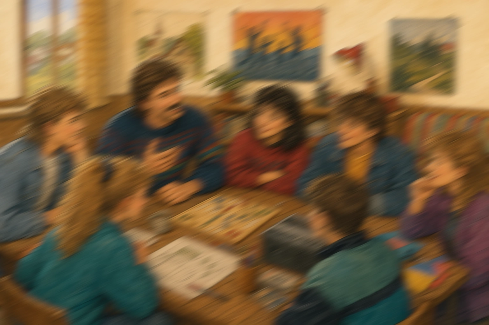

1986

1986
Die Anfänge der Jugendarbeit
Die Anfänge der Jugendarbeit in Bad Imnau gehen auf Franz Pecho zurück, der die Jugendlichen der damaligen Zeit betreute. Daraus entwickelte sich eine feste Gruppe, in der Gemeinschaft und gemeinsame Aktivitäten im Mittelpunkt standen.